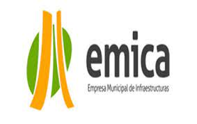

EMICA
Este Ente Descentralizado tendrá como objeto general el fortalecimiento técnico y gerencial de las capacidades inherentes al Municipio en lo relacionado con la materia de Infraestructura y el ambiente y la coordinación,
ejecución, dirección e inspección de las obras públicas municipales y de los servicios públicos que les sean encomendados por el Municipio Iribarren, conforme a La Ley Orgánica del Poder Público Municipal y el resto del
ordenamiento jurídico nacional y municipal que le fuera aplicable. Emica goza de patrimonio propio, autonomía administrativa y plena capacidad de autonomía.Entre sus principales atribuciones se tienen las siguientes:
- Crear proyectos para la mejora de la infraestructura y ambiente en el Municipio Iribarren aplicando elementos funcionales que expresen el éxito y la utilidad de nuestros valores relativos al trabajo y la operatividad.
- Definir y proyectar estrategias que permitan obtener zonas de esparcimiento y recreación con las áreas verdes que inviten al disfrute y al descanso de los habitantes del Municipio
- Mejorar las vías del Municipio Iribarren, el alumbrado público, las aceras, los drenajes, entre otros.
- Impulsar programas de Autoconstrucción, a fin de incorporar a la comunidad en pro de su propio desarrollo.

1Misión
-Hacer de Iribarren un Municipio Seguro, Productivo y Solidario a través de la parroquialización del gobierno para que la gestión llegue de forma concreta a todos los habitantes. Mantener la conservación del ambiente de plazas, parques, avenidas principales con el ornato. Construir obras como parques, plazas, simoncitos, y reavilitación de CDI, canchas, ambulatorios, entre otros.
2Visión
-Llevar a cabo una gestión municipal transparente, eficiente, incluyente, descentralizada y participativa, en la que se genere y se promueva el progreso solidario, el emprendimiento popular, la seguridad ciudadana, la calidad de vida, la convivencia pacífica y el bienestar social.